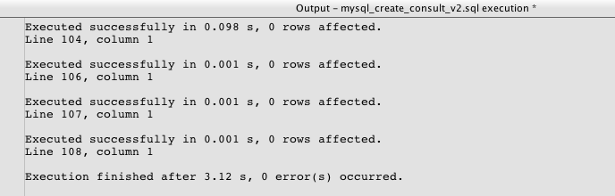
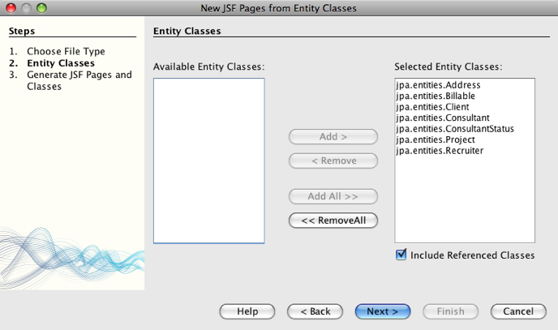
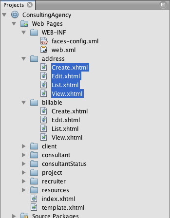
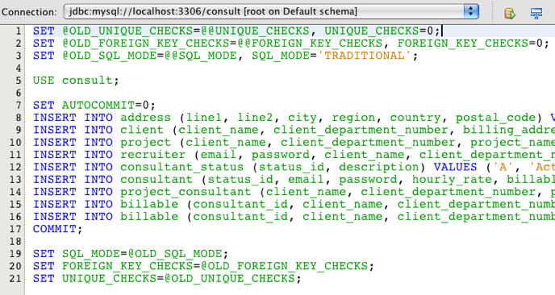
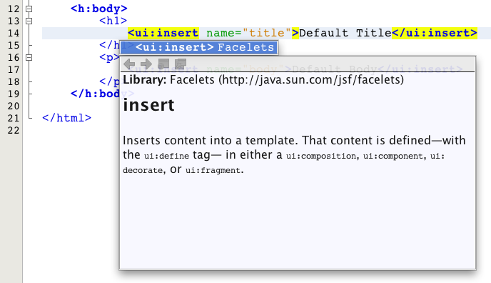
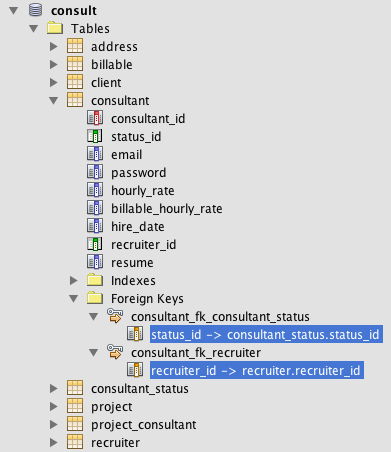
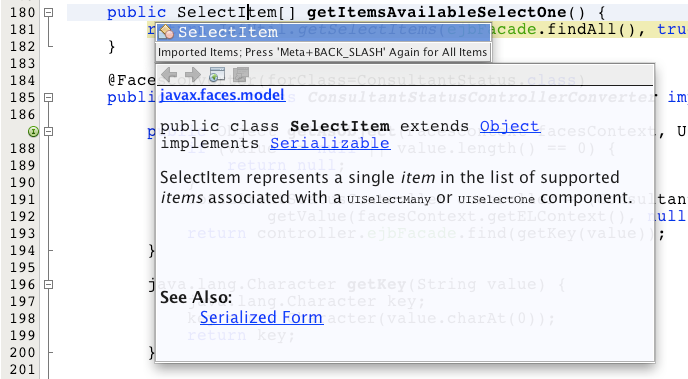
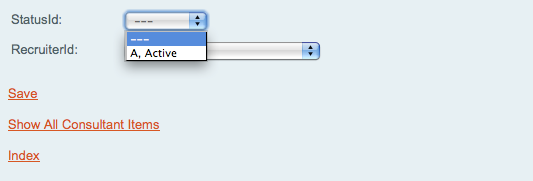
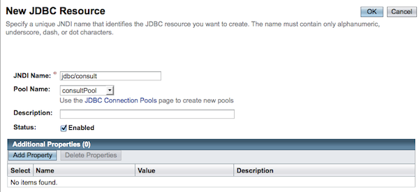

Apache NetBeans
Apache NetBeansLatest release
Создание приложения JavaServer Faces 2.x CRUD на основе базы данных
| This tutorial needs a review. You can open a JIRA issue, or edit it in GitHub following these contribution guidelines. |
В этом учебном курсе описывается использование NetBeans IDE для создания веб-приложения, взаимодействующего с серверной базой данных. Приложение предоставляет возможность просмотра и изменения данных, содержащихся в базе данных, другими словами – функциональные возможности CRUD (Create, Read, Update, Delete – создание, чтение, обновление, удаление). Разрабатываемое приложение основывается на следующих технологиях.
-
JavaServer Faces (JSF) 2.x для веб-страниц внешнего интерфейса, обработки проверки и управления циклом "запрос-ответ".
-
Интерфейс API сохранения состояния Java (Java Persistence API, JPA) 2.0 с использованием EclipseLink для создания классов сущностей из базы данных и управления транзакциями. (EclipseLink является образцовой реализацией JPA и поставщиком сохранения состояния для сервера GlassFish по умолчанию).
-
Enterprise JavaBeans (EJB) 3.1 – предоставление компонентов EJB без сохранения состояния, которые имеют доступ к классам сущностей и содержат бизнес-логику для приложения.
В среде IDE предоставляются два мастера для создания всех строк кода приложения. Первый – мастер создания классов сущностей из базы данных, позволяющий создавать классы сущностей из предоставленной базы данных. После создания классов сущностей используйте мастер создания страниц JSF из классов сущностей для создания управляемых компонентов JSF и компонентов EJB для классов сущностей, а также набор страниц Facelets для обработки представления данных классов сущностей. Последний раздел руководства Анализ приложения является дополнительным. В него включено множество упражнений, помогающих лучше понять приложение и ознакомиться со средой IDE.
Для работы с этим учебным курсом требуется программное обеспечение и материалы, перечисленные ниже.
| Программное обеспечение или материал | Требуемая версия |
|---|---|
7.2, 7.3, 7.4, 8.0, пакет Java EE |
|
7 или 8 |
|
3.x, 4.x |
|
mysql-consult.zip (MySQL) или javadb-consult.zip (JavaDB) |
неприменимо |
Примечания
-
В комплект Java EE в среде IDE NetBeans также входит сервер GlassFish - сервер, совместимый с Java EE 6, который требуется для этого учебного курса.
-
Для проекта решения в этом учебном курсе загрузите ConsultingAgencyJSF20.zip
Создание базы данных
В целях этого руководства используется база данных консультационного агентства с именем consult. Эта база данных не входит в устанавливаемую среду IDE, поэтому перед изучением этого руководства необходимо создать базу данных.
База данных consult разработана для демонстрации области поддержки среды IDE для обработки различных структур баз данных. Таким образом, эта база данных не предназначена для использования в качестве рекомендуемого примера разработки базы данных или в качестве практической рекомендации. Тем не менее, в нее включено множество возможностей, которые потенциально требуются при разработке базы данных. Например, база данных consult содержит все возможные типы отношений, составные первичные ключи и многие другие типы данных. Подробный обзор структуры базы данных приведен в таблице ниже.
Примечания:
-
В данном учебном курсе используется сервер базы данных MySQL, однако для работы с этим учебным руководством можно также использовать сервер базы данных JavaDB. Чтобы создать базу данных в JavaDB, загрузите и извлеките архив javadb-consult.zip. Архив содержит сценарии SQL для создания, удаления и заполнения базы данных
consult. -
Для получения дополнительной информации о настройке среды IDE для работы с MySQL см. учебный курс Подключение к базе данных MySQL.
-
Дополнительные сведения о настройке среды IDE для работы с JavaDB приведены в учебном курсе Работа с базой данных Java DB (Derby).
Сочетание MySQL с GlassFish:
При использовании сервера баз данных MySQL и вместе с ним GlassFish версии 3 или Open Source Edition версии 3.0.1 необходимо убедиться, что база данных защищена паролем. (Дополнительную информацию можно получить в описании Issue 12221 (проблема 12221) сервера GlassFish.) При использовании учетной записи MySQL root по умолчанию с пустым паролем с помощью командной строки можно установить другой пароль.
К примеру, чтобы установить пароль к nbuser, необходимо в командную строку ввести следующие команды.
shell> mysql -u root
mysql> UPDATE mysql.user SET Password = PASSWORD('_nbuser_') WHERE User = 'root';
mysql> FLUSH PRIVILEGES;Если в ответ получена ошибка “mysql: command not found” (mysql: не найдена команда), это означает, что команда mysql не была добавлена в переменную среды PATH. Вместо этого команду можно вызвать, выбрав полный путь к установочному каталогу MySQL bin. Например, если команда mysql находится на компьютере по пути /usr/local/mysql/bin, выберите следующее:
shell> /usr/local/mysql/bin/mysql -u rootДополнительные сведения приведены в официальном справочном руководстве по MySQL:
Для создания базы данных и подключения к ней из среды IDE выполните следующие действия.
-
Загрузите mysql-consult.zip и извлеките архив в локальную систему. В результате извлечения архива появятся сценарии SQL для создания и заполнения базы данных. Архив также содержит сценарии для перетаскивания таблиц.
-
В окне 'Службы' разверните узел Databases, щелкните правой кнопкой мыши узел MySQL и выберите 'Запустить сервер'.
-
Щелкните правой кнопкой мыши узел "MySQL Server" и выберите "Create Database".
-
В диалоговом окне "Создание базы данных MySQL" введите consult в поле "Имя базы данных". Нажмите кнопку "ОК". Под узлом "Базы данных" появится новый узел (
jdbc:mysql://localhost:3306/consult [корень в схеме по умолчанию]). -
Правой кнопкой мыши щелкните новый узел и выберите "Подключить".
-
В основном меню выберите "Файл > Открыть файл" и перейдите к извлеченному файлу
mysql_create_.sql. Нажмите кнопку Open ("Открыть"). Файл автоматически откроется в редакторе SQL.

Figure 1. Откройте файлы SQL в редакторе IDE
-
Убедитесь, что база данных
consultвыбрана в раскрывающемся списке "Соединение" на панели инструментов редактора SQL, затем нажмите кнопку 'Выполнить SQL' ( ).
После нажатия кнопки "Запустить SQL" в окне вывода появятся следующие выходные данные.

Figure 2. Окно вывода, в котором указываются сведения о выполнении SQL
Изучение структуры базы данных
Чтобы убедиться в том, что таблицы созданы правильно, разверните узел "Таблицы" под узлом подключения к базе данных. В развернутом узле таблицы можно посмотреть столбцы, индексы и внешние ключи. Для просмотра дополнительных сведений о столбце щелкните правой кнопкой мыши и выберите 'Свойства'.

Figure 3. В окне 'Службы' отображаются подключения к базам данных, таблицы, столбцы таблиц, индексы и внешние ключи
Примечание. Если таблицы не отображаются в узле 'Таблицы', щелкните правой кнопкой мыши узел 'Таблицы' и выберите 'Обновить'.
Анализ структуры базы данных consult позволяет установить, что база данных содержит таблицы с множеством отношений и различными типами полей. При создании классов сущностей в базе данных в среде IDE автоматически создается соответствующий код для различных типов полей.

Figure 4. Диаграмма связей сущностей базы данных consult
В следующей таблице представлено описание таблиц, обнаруженных в базе данных consult.
| Таблица базы данных | Описание | Функции разработки |
|---|---|---|
CLIENT |
Клиент консультационного агентства |
Несгенерированный составной первичный ключ (поля которого не являются частью внешнего ключа) |
CONSULTANT |
Сотрудник консультационного агентства, которого могут нанять клиенты на контрактной основе. |
Включает в себя поле резюме типа LONG VARCHAR. |
CONSULTANT_STATUS |
Состояние консультанта в консультационном агентстве (пример возможных состояний: "Активно" и "Неактивно"). |
Несгенерированный первичный ключ типа CHAR. |
RECRUITER |
Сотрудник консультационного агентства, ответственный за установление связи между клиентами и консультантами. |
|
PROJECT |
Проект, под который клиент укомплектовывает штат консультантами консультационного агентства. |
Несгенерированный составной первичный ключ, который содержит два поля, составляющие внешний ключ для таблицы CLIENT. |
BILLABLE |
Количество часов, отработанных консультантом над проектом, которые консультационное агентство выставляет в счете на оплату соответствующему клиенту. |
Включает в себя поле артефакта типа CLOB. |
ADDRESS |
Адрес для выставления счета клиенту. |
|
PROJECT_CONSULTANT |
Таблица перекрестных ссылок, определяющая текущие присвоения консультантов проектам. |
Перекрестные ссылки PROJECT и CONSULTANT, при этом последней соответствует составной первичный ключ. |
База данных consult имеет множество отношений. При создании классов сущностей из базы данных в среде IDE автоматически создаются свойства соответствующего типа Java на основе типа SQL столбцов. Следующая таблица описывает отношения сущностей для базы данных consult (обратные отношения не отображаются).
| Сущность | Связанная сущность | Информация об отношениях | Описание |
|---|---|---|---|
CLIENT |
RECRUITER |
нулевое, "один к одному", с правкой вручную; нулевое, "один ко многим", если без правки. |
CLIENT соответствует несколько RECRUITER, а RECRUITER соответствует нуль или один CLIENT (если без правки вручную). |
CLIENT |
ADDRESS |
ненулевое, "один к одному". |
CLIENT соответствует один ADDRESS, а ADDRESS соответствует нуль или один CLIENT. |
CLIENT |
PROJECT |
ненулевое, "один ко многим"; в сущности "Проект" значение поля клиента является частью первичного ключа проекта. |
CLIENT соответствует несколько PROJECT, а PROJECT соответствует один CLIENT. |
CONSULTANT |
PROJECT |
"многие ко многим". |
CONSULTANT соответствует несколько PROJECT, а PROJECT соответствует несколько CONSULTANT. |
CONSULTANT |
BILLABLE |
ненулевое, "один ко многим". |
CONSULTANT соответствует несколько BILLABLE, а BILLABLE соответствует один CONSULTANT. |
CONSULTANT_STATUS |
CONSULTANT |
ненулевое, "один ко многим". |
CONSULTANT_STATUS соответствует несколько CONSULTANT, а CONSULTANT соответствует один CONSULTANT_STATUS. |
CONSULTANT |
RECRUITER |
нулевое, "один ко многим". |
CONSULTANT соответствует нуль или одного RECRUITER, а RECRUITER соответствует несколько CONSULTANT. |
BILLABLE |
PROJECT |
ненулевое, "один ко многим". |
BILLABLE соответствует один PROJECT, а PROJECT соответствует несколько BILLABLE. |
Теперь, после создания базы данных, можно создать веб-приложение и использовать мастер создания классов сущностей из базы данных для создания классов сущностей на основе таблиц баз данных.
Создание проекта веб-приложения
В этом упражнении будет создан веб-проект и добавлена платформа JavaServer Faces к проекту. При создании проекта выбираем JavaServer Faces на панели "Платформы" мастера создания проекта.
-
Выберите "Файл > Новый проект" (CTRL+SHIFT+N; ⌘+SHIFT+N в Mac ОС) в главном меню.
-
Выберите "Веб-приложение" в категории "Java Web". Нажмите кнопку "Далее".
-
Введите
ConsultingAgencyв качестве имени проекта и укажите местоположение проекта. Нажмите кнопку "Далее". -
Укажите GlassFish в качестве сервера и Java 6 Web или Java EE 7 Web в качестве версии Java EE. Нажмите кнопку "Далее".
-
На панели "Платформы" выберите параметр JavaServer Faces. Нажмите кнопку "Завершить".
При нажатии кнопки "Готово" в среде IDE будет создан проект веб-приложения и открыт index.xhtml в редакторе.
Создание классов сущностей из базы данных
После подключения к базе данных в среде IDE можно использовать мастер создания классов сущностей из базы данных для быстрого создания классов сущностей на основе таблиц в базе данных. В среде IDE можно создавать классы сущностей для каждой выбранной таблицы, а также создавать любые классы сущностей для соответствующих таблиц.
-
В окне 'Проекты' щелкните правой кнопкой мыши узел проекта
ConsultingAgencyи выберите 'Создать' > 'Классы сущностей' в базе данных. Если данная команда отсутствует, выберите пункт "Прочие". После этого в мастере создания файла выберите категорию "Сохранение состояния", а затем - пункт "Классы сущностей из базы данных". -
Для открытия диалогового окна "Создание источника данных" в раскрывающемся списке "Источник данных" выберите "Новый источник данных".
-
В поле "Имя JNDI" введите
jdbc/consultи выберите подключениеjdbc:mysql://localhost:3306/consultв списке "Подключение к базе данных".

Figure 5. Укажите имя JNDI и соединение с базой данных для создания источника данных
-
Нажмите кнопку "ОК" для закрытия диалогового окна и возврата в мастер. Таблицы базы данных
consultвыводятся в окне списка "Доступные таблицы". -
Для выбора всех таблиц, имеющихся в базе данных, нажмите кнопку "Добавить все". Нажмите кнопку "Далее".

-
Введите
jpa.entitiesв качестве имени пакета. -
Убедитесь, что установлены оба флажка — и создания именованных запросов, и создания блоков сохранения состояния. Нажмите кнопку "Завершить".
При нажатии кнопки "Готово" среда IDE создает классы сущностей в пакете проекта jpa.entities.
При использовании мастера создания классов сущностей из базы данных в среде IDE проверяются отношения между таблицами базы данных. В окне 'Проекты' при развертывании узла проекта jpa.entities можно увидеть, что в IDE создан класс сущности для всех таблиц, кроме таблицы PROJECT_CONSULTANT. В среде IDE класс сущностей для таблицы PROJECT_CONSULTANT не создан, так как она является таблицей перекрестных ссылок.

Figure 6. снимок окна 'Проекты', в котором отображаются созданные классы сущностей
В среде IDE также создано два дополнительных класса для таблиц с составными первичными ключами: CLIENT и PROJECT. К именам классов первичных ключей для этих таблиц (ClientPK.java и ProjectPK.java) добавлено PK.
При просмотре созданного кода для классов сущностей можно отметить, что мастером добавлены аннотации @GeneratedValue к автоматически созданным полям ID и аннотации @Basic(optional = "false") к полям в классах сущностей. На основе аннотаций @Basic(optional = "false") мастер создания страниц JSF из классов сущностей способен создавать код с блоками проверок для предотвращения нарушений в ненулевых столбцах для этих полей.
Создание страниц JSF из классов сущностей
Теперь, после создания классов сущностей, можно создать веб-интерфейс для отображения и изменения данных. Для создания страниц JavaServer Faces используется страницы JSF мастера создания классов сущностей. Код, созданный мастером, основан на аннотациях сохранения состояния, содержащихся в классах сущностей.
Для каждого класса сущностей мастер создает следующие файлы.
-
сеансный компонент без сохранения состояния, расширяющий
AbstractFacade.java -
управляемый компонент JSF в контексте сеанса;
-
каталог, содержащий четыре файла Facelets возможностей CRUD (
Create.xhtml,Edit.xhtml,List.xhtmlиView.xhtml);
Мастер также создает следующие файлы.
-
класс
AbstractFacade.java, содержащий бизнес-логику для создания, извлечения, изменения и удаления экземпляров сущностей -
служебные классы, используемые управляемыми компонентами JSF (
JsfUtil,PaginationHelper); -
набор свойств для локализованных сообщений и соответствующая запись в файле настройки Faces проекта (создается файл
faces-config.xml, если он на данный момент отсутствует); -
вспомогательные веб-файлы, включая стандартную таблицу стилей для отображения компонентов и файл шаблона Facelets.
Чтобы создать страницу JSF, выполните следующие действия:
-
В окне 'Проекты' щелкните правой кнопкой мыши узел проекта и выберите 'Создать' > 'Страницы JSF' в 'Классы сущностей', чтобы открыть мастер. Если данная команда отсутствует, выберите пункт "Прочие". После этого в мастере создания файла выберите категорию "JavaServer Faces", затем "Страницы JSF из классов сущностей".)
В окне "Доступные классы сущностей" выводится список из семи классов сущностей, имеющихся в этом проекте. В окне не выводятся встраиваемые классы (ClientPK.java и ProjectPK.java).
-
Нажмите кнопку "Добавить все" для переноса всех классов в окно "Выбранные классы сущностей".

Figure 7. В мастере создания страниц JSF из классов сущностей отображаются все классы сущностей, содержащиеся в проекте
Нажмите кнопку "Далее".
-
На третьем экране мастера "Создание страниц JSF и классов" в поле "Пакет сеансного компонента JPA" введите
jpa.session. -
В поле "Пакет классов JSF" введите
jsf. -
В поле "Имя набора локализаций" введите “/resources/Bundle”. Будет создан пакет с именем
resources, в который входит файлBundle.properties. (Если поле оставить пустым, набор свойств будет создан в пакете проекта по умолчанию.)

Figure 8. Укажите имена пакетов и папок для созданных файлов
Для оптимизации правил проекта в среде IDE настройте файлы, созданные в мастере. Для изменения шаблонов, используемых в мастере, щелкните ссылку "Настройка шаблона".

Figure 9. Настройка шаблонов для файлов, созданных мастером
В целом, для вызова и изменения всех шаблонов, поддерживаемых в среде IDE, используйте диспетчер шаблонов ("Сервис" > "Шаблоны").
-
Нажмите кнопку "Завершить". В среде IDE создаются сеансные компоненты без сохранения состояния в пакете
jpa.sessionи управляемые компоненты JSF в контексте сеанса в пакетеjsf. Каждый сеансный компонент без сохранения состояния обрабатывает операции для соответствующего класса сущностей, включая создание, правку и удаление экземпляров класса сущностей, с помощью интерфейса Java Persistence API. Каждый управляемый компонент JSF реализует интерфейсjavax.faces.convert.Converterи играет роль экземпляров преобразования соответствующего класса сущностей в объектыStringи наоборот.
При развертывании узла "Веб-страницы" можно отметить, что в среде IDE была создана папка для каждого класса сущностей. Каждая папка содержит файлы Create.xhtml, Edit.xhtml, List.xhtml и View.xhtml. В среде IDE также изменен файл index.xhtml посредством вставки ссылок на каждую из страниц List.xhtml.

Figure 10. Страницы Facelets для всех классов сущностей создаются мастером
Каждый управляемый компонент JSF относится к четырем соответствующим файлам Facelets и содержит код, вызывающий методы в соответствующем сеансном компоненте.
Разверните узел папки resources для поиска таблицы стилей по умолчанию jsfcrud.css, созданной в мастере. При открытии страницы приветствия приложения (index.xhtml) или файла шаблона Facelets (template.xhtml) в редакторе отобразится ссылка на таблицу стилей.
<h:outputStylesheet name="css/jsfcrud.css"/>Файл шаблона Facelets используется в каждом из четырех файлов Facelets для каждого класса сущностей.
При развертывании узла "Пакеты с исходными файлами" отображаются сеансные компоненты, управляемые компоненты JSF, служебные классы и набор свойств, созданные мастером.

Figure 11. снимок каталога 'Исходные пакеты' в окне 'Проекты', в котором отображаются созданные мастером классы сущностей
Также мастером был создан файл настройки Faces (faces-config.xml) для регистрации местоположения набора свойств. При развертывании узла "Файлы настройки" и открытии faces-config.xml в редакторе XML отобразится следующая запись.
<application>
<resource-bundle>
<base-name>/resources/Bundle</base-name>
<var>bundle</var>
</resource-bundle>
</application>Кроме того, при развертывании нового пакета resources отображается файл Bundle.properties, содержащий сообщения для языка клиента по умолчанию. Сообщения произведены из свойств класса сущностей.
Для добавления нового комплекта свойств щелкните правой кнопкой файл Bundle.properties и выберите 'Настройка'. В диалоговом окне "Средство настройки" можно добавить к приложению новые локали.
Анализ приложения
Теперь, при наличии в проекте классов сущностей, сеансных компонентов EJB для управления классами сущностей и внешнего интерфейса на основе JSF для отображения и изменения базы данных, попробуйте выполнить проект и посмотрите результаты.
Ниже приведены несколько коротких дополнительных упражнений, которые помогут лучше узнать приложение, а также возможности и функции среды IDE.
Изучение выполненного проекта
-
Для запуска проекта щелкните правой кнопкой мыши узел проекта в окне 'Проекты' и выберите 'Запустить' или нажмите кнопку 'Запустить проект' (
 ) на главной панели инструментов.
) на главной панели инструментов.
При отображении страницы приветствия приложения выводится список ссылок, позволяющих просмотреть записи, которые включены в каждую таблицу базы данных.

Figure 12. Ссылки для отображения содержимого баз данных для всех таблиц
После завершения выполнения всех шагов мастера создания страниц JSF из классов сущностей ссылки добавлены на страницу приветствия (index.xhtml). Они представлены в качестве точек входа на страницы Facelets, обеспечивающие функциональность CRUD в базе данных "Консультационное агентство".
<h:body>
Hello from Facelets
<h:form>
<h:commandLink action="/address/List" value="Show All Address Items"/>
</h:form>
<h:form>
<h:commandLink action="/billable/List" value="Show All Billable Items"/>
</h:form>
<h:form>
<h:commandLink action="/client/List" value="Show All Client Items"/>
</h:form>
<h:form>
<h:commandLink action="/consultant/List" value="Show All Consultant Items"/>
</h:form>
<h:form>
<h:commandLink action="/consultantStatus/List" value="Show All ConsultantStatus Items"/>
</h:form>
<h:form>
<h:commandLink action="/project/List" value="Show All Project Items"/>
</h:form>
<h:form>
<h:commandLink action="/recruiter/List" value="Show All Recruiter Items"/>
</h:form>
</h:body>-
Щелкните ссылку “Показать все элементы консультантов”. При анализе приведенного выше кода можно отметить, что целевая страница –
/consultant/List.xhtml. (В JSF 2.x расширение файла является предполагаемым из-за неявного перехода.)

Figure 13. Таблица 'Consultants' в настоящее вермя пуста
Текущая база данных не содержит данные примера. Данные можно добавить вручную посредством нажатия ссылки “Create New Consultant” и использования предоставленной веб-формы. При этом инициируется отображение страницы /consultant/Create.xhtml. Для заполнения таблиц данными примера также можно выполнить сценарий SQL в среде IDE. В следующих подразделах рассматриваются оба эти варианта.
Для возврата к списку ссылок на странице приветствия щелкните индексную ссылку. По ссылкам открывается представление данных, хранящихся в каждой таблице базы данных, и инициируется файл List.xhtml для каждой отображаемой папки сущностей. Как будет показано ниже, после внесения данных в таблицу появятся другие ссылки для каждой записи, с помощью которых можно просматривать (View.xhtml), править (Edit.xhmtl) и удалять данные отдельной записи таблицы.
Примечание. Если при развертывании приложения произойдет ошибка, см. раздел устранение неполадок. (См. также статью об устранении неполадок в разделе Создание простого веб-приложения с помощью базы данных MySQL.)
Заполнение базы данных с помощью сценария SQL
Запустите предоставленный сценарий, создающий данные примера для таблиц базы данных. Сценарий (mysql_insert_data_consult.sql) включен в файл ZIP "База данных консультационного агентства", который можно загрузить из таблицы требуемого программного обеспечения.
В зависимости от сервера базы данных, с которым вы работаете (MySQL или JavaDB), можно выполнить запуск предоставленного сценария, создающего данные примера для таблиц базы данных. Для MySQL таким сценарием является mysql_insert_data_consult.sql. Для JavaDB таким сценарием является javadb_insert_data_consult.sql. Оба сценария включены в соответствующие архивы, которые можно загрузить из таблицы требуемого программного обеспечения.
-
Выберите в основном меню "Файл" > "Открыть файл", затем перейдите к папке сценария на компьютере. Нажмите кнопку Open ("Открыть"). Файл автоматически открывается в редакторе SQL среды IDE.
-
Убедитесь, что база данных
consultвыбрана в раскрывающемся списке "Соединение" на панели инструментов редактора SQL.

Figure 14. Откройте сценарий в редакторе SQL в IDE
Щелкните правой кнопкой мыши в редакторе и выберите 'Запустить оператор' или нажмите кнопку 'Запустить SQL' ( ). Результаты выполнения сценария отображаются в окне вывода.
-
Перезапустите сервер приложений GlassFish. Это необходимо для перезагрузки и кэширования новых данных при помощи сервера, содержащихся в базе данных
consult. Чтобы это сделать, перейдите на вкладку 'Сервер GlassFish' в окне вывода (на вкладке 'Сервер GlassFish' отображается журнал сервера). Затем нажмите кнопку 'Перезапустить сервер' в левом поле ( ). Сервер остановится, затем перезапустится.
). Сервер остановится, затем перезапустится. -
Выполните проект еще раз и щелкните ссылку “Показать все элементы консультантов”. Теперь можно заметить, что список больше не пуст.

Поддержка баз данных NetBeans
Можно использовать средство просмотра для таблиц базы данных в среде IDE, чтобы отображать и изменять данные таблиц, управляемые непосредственно в базе данных. Например, щелкните правой кнопкой мыши таблицу consultant в окне 'Службы' и выберите 'Просмотреть данные'.

Figure 15. В контекстном меню таблиц баз данных выберите 'Просмотреть данные'
Запрос SQL, который используется для выполнения действий, отображается в верхней части редактора, а графическое представление таблицы помещено ниже.

Дважды щелкните ячейки таблицы для выполнения внутристрочных изменений данных. Щелкните значок 'Фиксировать записи' (  ) для фиксации изменений базы данных.
) для фиксации изменений базы данных.
Графическое представление обеспечивает большую функциональность. Дополнительные сведения см. в разделе Поддержка баз данных в IDE NetBeans.
Изучение поддержки редактора на страницах Facelets
-
Откройте страницу
/consultant/List.xhtmlв редакторе. В строке 8 указывается, что визуализация страницы зависит от файлаtemplate.xhtmlFacelets.
<ui:composition template="/template.xhtml">Чтобы отобразить номера строк, щелкните правой кнопкой мыши на левой границе редактора и выберите 'Показать номера строк'.
-
С помощью диалогового окна "Переход к файлу" в среде IDE откройте файл
template.xhtml. Нажмите сочетание клавиш ALT+SCHIFT+O (CTRL+SHIFT+O в Mac), затем введитеtemplate.

Figure 16. С помощью диалогового окна "Переход к файлу" быстро откройте файлы проекта
Нажмите кнопку "ОК" (или нажмите ENTER).
-
В шаблоне применяются теги
<ui:insert>для вставки содержимого из других файлов в заголовок и тело. Установите курсор на тег<ui:insert>, затем нажмите сочетание клавиш CTRL+ПРОБЕЛ для вызова всплывающего окна документации.

Figure 17. Нажмите сочетание клавиш CTRL+ПРОБЕЛ для вызова всплывающего окна документации в тегах Facelets
Для вызова всплывающего окна документации можно нажать сочетание клавиш CTRL+ПРОБЕЛ, установив курсор на тегах JSF и соответствующих атрибутах. Отображаемая документация взята из описаний, предоставленных в официальной Документации о библиотеке тегов JSF.
-
Вернитесь к файлу
List.xhtml(нажмите CTRL+TAB). Теги<ui:define>используются для определения содержимого, которое применяется в заголовке и теле шаблона. Этот шаблон используется для всех четырех файлов Facelets (Create.xhtml,Edit.xhtml,List.xhtmlиView.xhtml), созданных для каждого класса сущностей. -
Установите курсор на одном из выражений на языке выражений, используемых для локализованных сообщений, содержащихся в файле
Bundle.properties. Для просмотра локализованного сообщения нажмите сочетание клавиш CTRL+ПРОБЕЛ.

На приведенном выше изображении можно заметить, что выражение на языке выражений разрешено в списке “List”, который применяется для заголовка шаблона и проверяется из отображаемой в браузере страницы.
-
Выполните прокрутку до конца файла и найдите код для ссылки
Create New Consultant(строка 92). Это выглядит следующим образом:
<h:commandLink action="#{consultantController.prepareCreate}" value="#{bundle.ListConsultantCreateLink}"/>-
Для вызова всплывающего окна документации нажмите сочетание клавиш CTRL+ПРОБЕЛ на атрибуте
actionдляcommandLink.
Атрибут action указывает на метод, обрабатывающий запрос при щелчке ссылки в браузере. Предоставлена следующая документация:
Компонент MethodExpression определяет вызываемую операцию приложения при его активации пользователем. Выражение должно определять общедоступный метод, который не принимает параметры и возвращает объект (метод toString() которого вызывается для получения логического результата), передаваемый в NavigationHandler для этого приложения.
Другими словами, значение action обычно относится к методу в управляемом компоненте JSF, который имеет значение String. Затем строка используется в NavigationHandler JSF для передачи запроса в соответствующее представление. Проверка этого осуществляется при выполнении следующих действий.
-
Установите курсор на
consultantControllerи нажмите сочетание клавиш CTRL+ПРОБЕЛ. Функция автозавершения кода в редакторе указывает на то, чтоconsultantControllerявляется управляемым компонентом JSF.

Figure 18. Автозавершение кода обеспечено для управляемых компонентов JSF
-
Переместите курсор на
prepareCreateи нажмите сочетание клавиш CTRL+ПРОБЕЛ. При вызове функции автозавершения кода выводится список методов, содержащихся в управляемом компонентеConsultantController.

Figure 19. Автозавершение кода обеспечено для методов классов
-
Нажмите CTRL (⌘ в Mac), затем наведите указатель мыши на
prepareCreate. Будет создана ссылка, с помощью которой можно перейти непосредственно к методуprepareCreate()в управляемом компонентеConsultantController.

Figure 20. Используйте навигацию в редакторе для быстрого перехода по исходному коду
-
Щелкните ссылку и просмотрите метод
prepareCreate()(отображаемый ниже).
public String prepareCreate() {
current = new Consultant();
selectedItemIndex = -1;
return "Create";
}Метод возвращает Create. Метод NavigationHandler собирает информацию в фоновом режиме и применяет строку Create в пути для открытия представления, отправленного в ответ на запрос: /consultant/Create.xhtml. (В JSF 2.x расширение файла является предполагаемым из-за неявного перехода.)
Изучение целостности базы данных с проверкой поля
-
На странице "Consultants List" в браузере щелкните ссылку “Create New Consultant”. Как показано в предыдущем подразделе, это инициирует визуализацию страницы
/consultant/Create.xhtml. -
Введите в форму следующие подробные сведения. На данный момент оставьте оба поля
RecruiterIdиStatusIdпустыми.
| Поле | Значение |
|---|---|
Id консультанта |
2 |
Эл. почта |
|
Пароль |
jack.smart |
Почасовая ставка |
75 |
Оплачиваемая почасовая ставка |
110 |
Дата принятия на работу |
07/22/2008 |
Резюме |
У меня большой опыт работы консультантом. Примите меня на эту должность, и вы не разочаруетесь! |
RecruiterId |
--- |
StatusId |
--- |
-
Нажмите кнопку "Сохранить". При подобном заполнении поле
StatusIdбудет отмечено ошибкой проверки.

Figure 21. Введите в форму образец данных
Почему это произошло? Повторно проверьте диаграмму "сущность/отношение" для базы данных консультационного агентства. Как указано выше в таблице связей, в таблицах CONSULTANT и CONSULTANT_STATUS совместно используется ненулевое отношение "один ко многим". Поэтому каждая запись в таблице CONSULTANT должна содержать ссылку на запись в таблице CONSULTANT_STATUS. Это отмечено во внешнем ключе consultant_fk_consultant_status, который имеет ссылки на две таблицы.
Внешние ключи, хранящиеся в таблицах, можно просмотреть посредством развертывания узла "Внешние ключи" таблицы в окне "Службы" (CTRL+5; ⌘+5 на компьютере Mac).

Figure 22. Проверьте атрибуты внешних ключей в окне 'Службы'
-
Для устранения ошибки проверки выберите
entity.ConsultantStatus[statusId=A]в раскрывающемся спискеStatusId.
*Примечание. *Поле RecruiterId можно оставить пустым. Как указано на диаграмме "сущность/отношение" для базы данных, между таблицами CONSULTANT и RECRUITER существует нулевое отношение "один ко многим", что означает, что создавать отношение между записями в таблице CONSULTANT с записью RECRUITER не требуется.
-
Нажмите кнопку "Сохранить". На экран выводится сообщение об успешном сохранении записи consultant. При щелчке ссылки
Show All Consultant Itemsв таблице появится новая запись.
Как правило, на созданных страницах Facelets отображаются ошибки вводимой пользователем информации:
-
пустые поля для ненулевых ячеек таблицы;
-
изменения данных, которые нельзя изменять (например, первичные ключи);
-
вставка данных неверного типа;
-
изменения данных, когда представление пользователя больше не синхронизируется с базой данных.
Правка классов сущностей
В предыдущем подразделе был показан не совсем интуитивно понятный параметр entity.ConsultantStatus[statusId=A] в раскрывающемся списке StatusId. Необходимо учитывать, что текст, отображаемый для каждой позиции в этом раскрывающемся списке, является строковым представлением каждой обнаруженной сущности ConsultantStatus (т.е., вызывается метод toString() класса сущностей).
В этом подразделе описаны способы использования автозавершения кода в редакторе, документация и поддержка функции переходов, чтобы сделать такой вывод. Кроме того, подготовка наиболее интуитивно понятного сообщения для раскрывающегося списка.
-
Откройте в редакторе файл
/consultant/Create.xhtml. Это форма "Create New Consultant", отображаемая в браузере. Выполните прокрутку вниз до кода раскрывающегося спискаStatusId(выделено ниже жирным шрифтом).
<h:outputLabel value="#{bundle.CreateConsultantLabel_resume}" for="resume" />
<h:inputTextarea rows="4" cols="30" id="resume" value="#{consultantController.selected.resume}" title="#{bundle.CreateConsultantTitle_resume}" />
*<h:outputLabel value="#{bundle.CreateConsultantLabel_statusId}" for="statusId" />
<h:selectOneMenu id="statusId" value="#{consultantController.selected.statusId}" title="#{bundle.CreateConsultantTitle_statusId}" required="true" requiredMessage="#{bundle.CreateConsultantRequiredMessage_statusId}">
<f:selectItems value="#{consultantStatusController.itemsAvailableSelectOne}"/>
</h:selectOneMenu>*
<h:outputLabel value="#{bundle.CreateConsultantLabel_recruiterId}" for="recruiterId" />
<h:selectOneMenu id="recruiterId" value="#{consultantController.selected.recruiterId}" title="#{bundle.CreateConsultantTitle_recruiterId}" >
<f:selectItems value="#{recruiterController.itemsAvailableSelectOne}"/>
</h:selectOneMenu>
</h:panelGrid>-
Проверьте атрибут
value, применяемый к тегу<f:selectItems>. Атрибутvalueопределяет текст, отображаемый для каждой позиции в раскрывающемся списке.
Нажмите сочетание клавиш CTRL+ПРОБЕЛ, установив курсор на itemsAvailableSelectOne. Автозавершение кода в редакторе указывает, что метод getItemsAvailableSelectOne() для ConsultantStatusController возвращает массив объектов SelectItem.

Figure 23. Автозавершение кода отображает возвращаемые классы для методов
-
Нажмите CTRL (⌘ в Mac), затем наведите указатель мыши на
itemsAvailableSelectOne. Создается ссылка, позволяющая переходить непосредственно к методуgetItemsAvailableSelectOne()в исходном коде сущностейConsultantStatus. Щелкните эту ссылку. -
Установите курсор на значении возврата
SelectItem[]в сигнатуре метода и нажмите сочетание клавиш CTRL+ПРОБЕЛ для вызова всплывающего окна документации.

Figure 24. Для вызова поддержки документации нажмите сочетание клавиш CTRL+ПРОБЕЛ.
Щелкните значок веб-браузера (  ) в окне документации, чтобы открыть Javadoc во внешнем веб-браузере.
) в окне документации, чтобы открыть Javadoc во внешнем веб-браузере.
Итак, класс SelectItem относится к инфраструктуре JSF. Компонент UISelectOne, как упоминалось в документации, представлен тегом <h:selectOneMenu> из разметки, проверенной выше в Шаге 1.
-
Нажмите CTRL (⌘ в Mac), затем наведите указатель мыши на
findAll(). Появится всплывающее окно, отображающее сигнатуру метода.

Figure 25. Просмотрите всплывающее окно сигнатур методов в редакторе
Здесь можно отметить, что ejbFacade.findAll() возвращает List объектов ConsultantStatus.
-
Перейдите к
JsfUtil.getSelectItems. Наведите указатель мыши наgetSelectItemsи нажмите CTRL (⌘ на компьютере Mac), затем щелкните появившуюся ссылку.
*Примечание. *Помните, что JsfUtil является одним из классов служебных программ, созданных при завершении страниц JSF из мастера классов логических объектов.
Этот метод организует цикл по списку сущностей (т.е., по списку List объектов ConsultantStatus) и создает SelectItem для каждой позиции. Как показано ниже (выделено жирным шрифтом), каждая позиция SelectItem создана с помощью объекта сущностей и метки объекта.
public static SelectItem[] getSelectItems(List<?> entities, boolean selectOne) {
int size = selectOne ? entities.size() + 1 : entities.size();
SelectItem[] items = new SelectItem[size];
int i = 0;
if (selectOne) {
items[0] = new SelectItem("", "---");
i++;
}
*for (Object x : entities) {
items[i++] = new SelectItem(x, x.toString());
}*
return items;
}Эта метка создана с помощью метода toString() сущностей и является представлением объекта, отображаемым в этом ответе. (См. определение документации Javadoc для конструктора SelectItem(значение java.lang.Object, метка java.lang.String).)
После проверки того, что методом toString() сущности является метод, отображаемый в браузере при просмотре позиций в раскрывающемся списке, измените метод ConsultantStatus toString().
-
Откройте класс сущностей
ConsultantStatusв редакторе. Измените методtoStringдля возвратаstatusIdиdescription. Это свойства записей, соответствующие двум столбцам таблицыCONSULTANT_STATUS.
public String toString() {
return *statusId + ", " + description;*
}-
Выполните проект еще раз. При отображении в браузере страницы приветствия щелкните ссылку
Show All Consultant Items, затем нажмитеCreate New Consultant.
Просмотрите раскрывающийся список StatusId. Теперь на экран будет выведен идентификатор состояния и описание записи, содержащейся в таблице CONSULTANT_STATUS базы данных.

Figure 26. В раскрывающемся списке StatusId отображаются элементы в соответствии с методом toString() сущности ConsultantStatus
Устранение проблем
В зависимости от конфигурации при развертывании приложения на сервере может произойти ошибка. В этом случае в окне "Результаты" отображается следующее сообщение.
GlassFish Server 4 is running.
In-place deployment at /MyDocuments/ConsultingAgency/build/web
GlassFish Server 4, deploy, null, false
/MyDocuments/ConsultingAgency/nbproject/build-impl.xml:1045: The module has not been deployed.
See the server log for details.Основная причина таких ошибок - проблемы при создании ресурсов JDBC на сервере. В этом случае на вкладке "Журнал сервера" в окне "Результаты" может отобразиться следующее или аналогичное сообщение.
Severe: Exception while preparing the app : Invalid resource : jdbc/consult__pm
com.sun.appserv.connectors.internal.api.ConnectorRuntimeException: Invalid resource : jdbc/consult__pmЕсли вкладка "Журнал сервера" отсутствует, ее можно добавить. Для этого щелкните правой кнопкой мыши узел GlassFish Server в окне "Службы" и выберите "Просмотр журнала доменного сервера".
Для этого приложения требуются два ресурса JDBC:
-
Ресурс JDBC или источник данных. Поиск ресурса JDBC в приложении осуществляется посредством поиска JNDI. Если посмотреть на элемент постоянного соединения (
persistence.xml), можно увидеть, что имя JNDI для источника данных JTA этого приложения -jdbc/consult.
Ресурс JDBC определяет текущий пул соединений, используемый приложением.
-
Пул соединений JDBC. Пул соединений определяет параметры подключения к базе данных, в том числе местоположение, имя пользователя и пароль. Для данного приложения используется пул соединений
consultPool.
Ресурс JDBC и пул соединений указываются в файле glassfish-resources.xml. Чтобы открыть файл glassfish-resources.xml в редакторе, разверните узел "Ресурсы сервера" в окне "Проекты" и дважды щелкните этот файл. Файл имеет примерно следующий вид.
<?xml version="1.0" encoding="UTF-8"?>
<!DOCTYPE resources PUBLIC "-//GlassFish.org//DTD GlassFish Application Server 3.1 Resource Definitions//EN" "http://glassfish.org/dtds/glassfish-resources_1_5.dtd">
<resources>
<jdbc-connection-pool allow-non-component-callers="false" associate-with-thread="false" connection-creation-retry-attempts="0" connection-creation-retry-interval-in-seconds="10" connection-leak-reclaim="false" connection-leak-timeout-in-seconds="0" connection-validation-method="auto-commit" datasource-classname="com.mysql.jdbc.jdbc2.optional.MysqlDataSource" fail-all-connections="false" idle-timeout-in-seconds="300" is-connection-validation-required="false" is-isolation-level-guaranteed="true" lazy-connection-association="false" lazy-connection-enlistment="false" match-connections="false" max-connection-usage-count="0" max-pool-size="32" max-wait-time-in-millis="60000" name="consultPool" non-transactional-connections="false" ping="false" pool-resize-quantity="2" pooling="true" res-type="javax.sql.DataSource" statement-cache-size="0" statement-leak-reclaim="false" statement-leak-timeout-in-seconds="0" statement-timeout-in-seconds="-1" steady-pool-size="8" validate-atmost-once-period-in-seconds="0" wrap-jdbc-objects="false">
<property name="serverName" value="localhost"/>
<property name="portNumber" value="3306"/>
<property name="databaseName" value="consult"/>
<property name="User" value="root"/>
<property name="Password" value="nb"/>
<property name="URL" value="jdbc:mysql://localhost:3306/consult?zeroDateTimeBehavior=convertToNull"/>
<property name="driverClass" value="com.mysql.jdbc.Driver"/>
/<jdbc-connection-pool>
<jdbc-resource enabled="true" jndi-name="jdbc/consult" object-type="user" pool-name="consultPool"/>
/<resources>Как видите, указанный в файле glassfish-resources.xml ресурс JDBC jdbc/consult определяет consultPool как имя пула соединений. Также здесь видны свойства consultPool. Для данного приложения в файле glassfish-resources.xml указан только один источник данных и только один пул соединений. Иногда возникает необходимость указать дополнительные ресурсы, например, временное хранилище данных, используемое только для разработки или тестирования.
Если ресурс JDBC и пул соединений не созданы на сервере автоматически при запуске приложения, их можно создать вручную в консоли администрирования GlassFish.
-
Если файл
glassfish-resources.xmlеще не открыт, откройте его в редакторе.
Для создания ресурса JDBC и пула соединений потребуются значения свойств, указанные в файле glassfish-resources.xml.
-
Щелкните правой кнопкой мыши узел GlassFish Server в окне "Службы" и выберите пункт меню "Открыть консоль администрирования домена". Консоль GlassFish откроется в браузере.
-
На панели "Общие задачи" в консоли GlassFish разверните узел JDBC, а также узлы Ресурсы JDBC и Пулы соединений JDBC.

В консоли отображаются текущие ресурсы JDBC, зарегистрированные на сервере. Если в списке под узлом JDBC на панели навигации "Общие задачи" отсутствуют ресурсы jdbc/consult и consultPool, их необходимо создать. Некоторые ресурсы JDBC , созданные по умолчанию при установке сервера, отображаются в виде дочерних узлов.
-
Выберите узел Пулы соединений JDBC, затем в разделе "Новый пул соединений JDBC" нажмите "Создать".

Figure 27. Раздел
-
Укажите consultPool в качестве имени пула, выберите javax.sql.ConnectionPoolDataSource в списке "Тип ресурса", затем выберите MySql в списке "Поставщик драйверов базы данных". Нажмите кнопку "Далее".
-
На экране 2 укажите значения свойств URL, имя пользователя и пароль, найденные в файле. Нажмите "Готово".

Figure 28. Панель
Значения свойств можно найти в файле glassfish-resources.xml.
При нажатии на кнопку "Готово" на сервере создается новый пул соединений, и под узлом "Пулы соединений JDBC" в консоли появляется соответствующий узел.
-
Выберите узел Ресурсы JDBC на панели навигации "Общие задачи" и нажмите "Создать".
-
Укажите jdbc/consult в качестве имени JNDI и выберите consultPool в списке "Имя пула". Нажмите OK.

Figure 29. Раздел
При нажатии на кнопку "Готово" на сервере создается новый ресурс JDBC, и под узлом "Ресурсы JDBC" в консоли появляется соответствующий узел.
В окне "Службы" в IDE раскройте узел "Ресурсы", находящийся под узлом GlassFish Server, и убедитесь, что в IDE добавлены новые ресурсы. Возможно, для отображения изменений потребуется обновить представление (щелкните правой кнопкой мыши узел "Ресурсы" и выберите "Обновить").

Figure 30. Ресурсы JDBC в окне
Другие советы по устранению проблем с MySQL и IDE см. в следующих документах:
-
Учебный курс Подключение к базе данных MySQL.
-
Статья об устранении неполадок в разделе Создание простого веб-приложения с помощью базы данных MySQL Отправить отзыв по этому учебному курсу
Дополнительные сведения
Подробнее о JSF 2.x см. в следующих ресурсах.
Статьи и учебные курсы по NetBeans
Внешние ресурсы
-
Технология JavaServer Faces (официальная домашняя страница)
-
Глава Технология JavaServer Faces в учебном курсе по Java EE 7
-
GlassFish Project Mojarra (официальный пример реализации JSF 2.х)